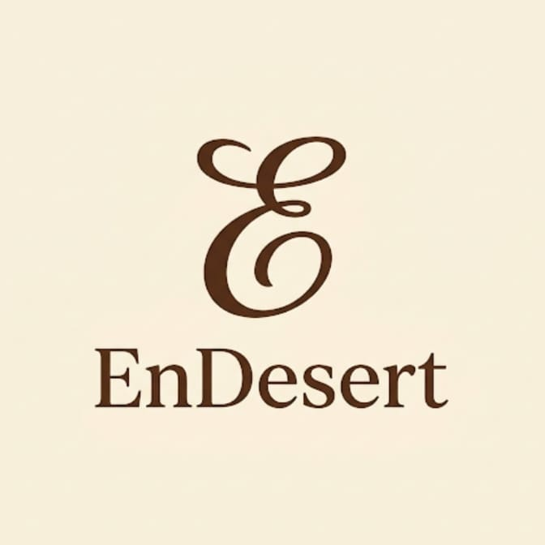

Dessert enak, dibuat di dapur sendiri
EnDesert mengumpulkan resep dessert yang bahannya mudah dicari dan langkahnya jelas, dari burnt cheesecake sampai klepon.
Lihat semua resep
EnDesert mengumpulkan resep dessert yang bahannya mudah dicari dan langkahnya jelas, dari burnt cheesecake sampai klepon.
Lihat semua resep